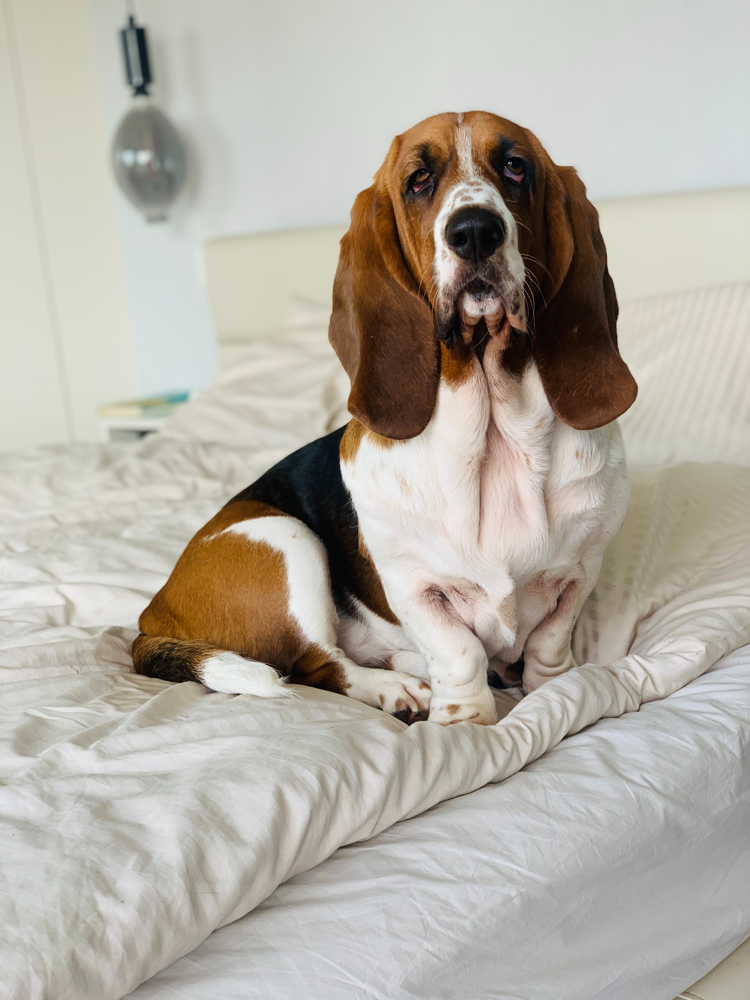

Basset Hounds were originally bred in France and Belgium. Basset is French for 'low.' It is thought Basset Hounds originated from crossing strains of older French breeds to create a low-built scenting hound to help track rabbit and deer for hunters. Their accuracy and persistence on scent made Bassets a popular choice for French aristocrats, for whom hunting was a way of life.
These hounds are known for their pleasant-natured and easygoing temperment. They are reliably good natured, sociable, and peaceful with adults, children, other pets, and even strangers! Basset Hounds are among the most clownish of all breeds, but they can be extremely stubborn and slow to obey commands. If you are willing to put in the effort to train them patiently and consistently, they can make fantastic family pets!

© 2023 Intro to HTML